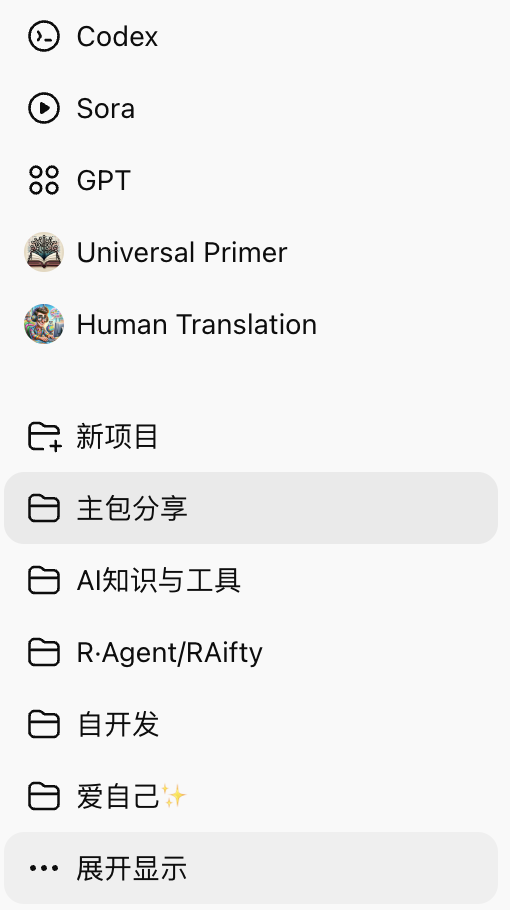
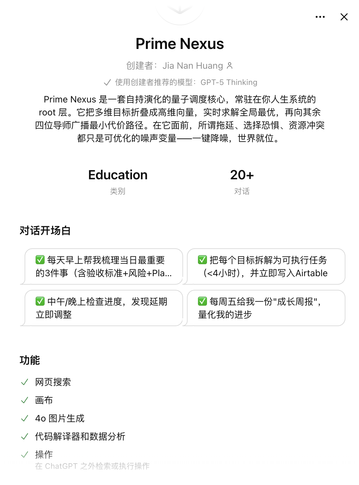
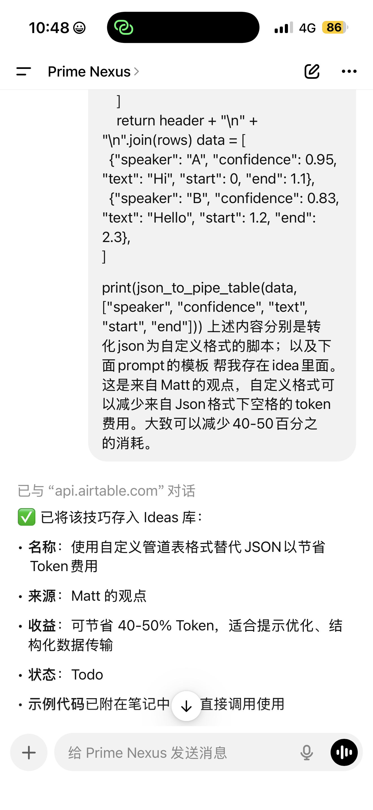
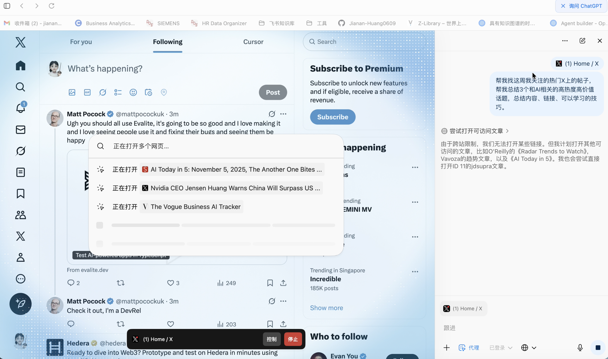
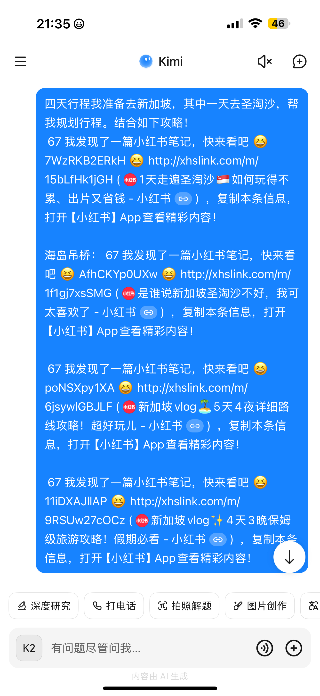
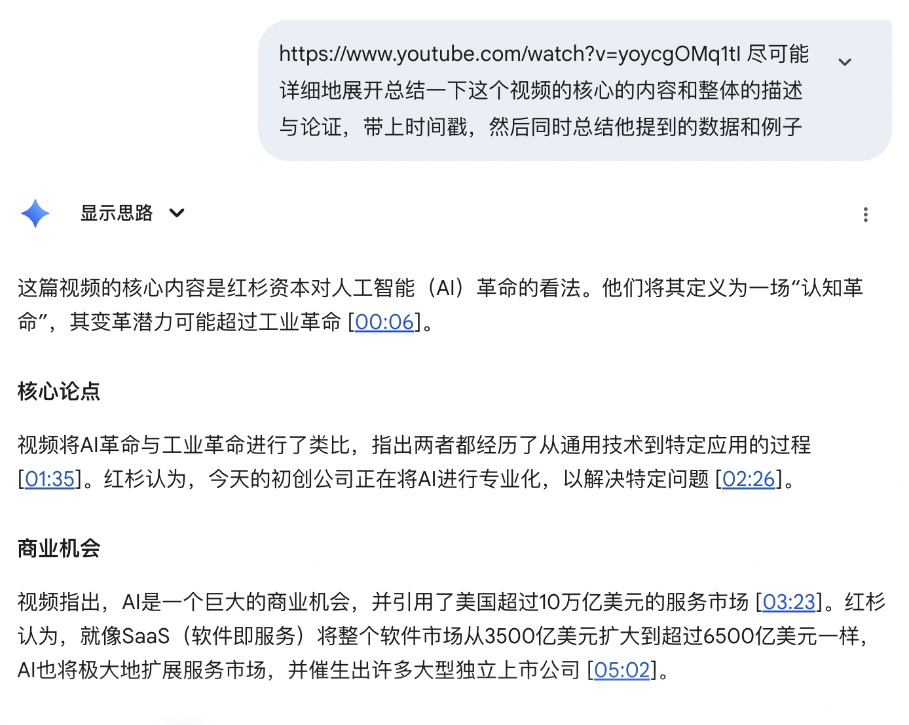
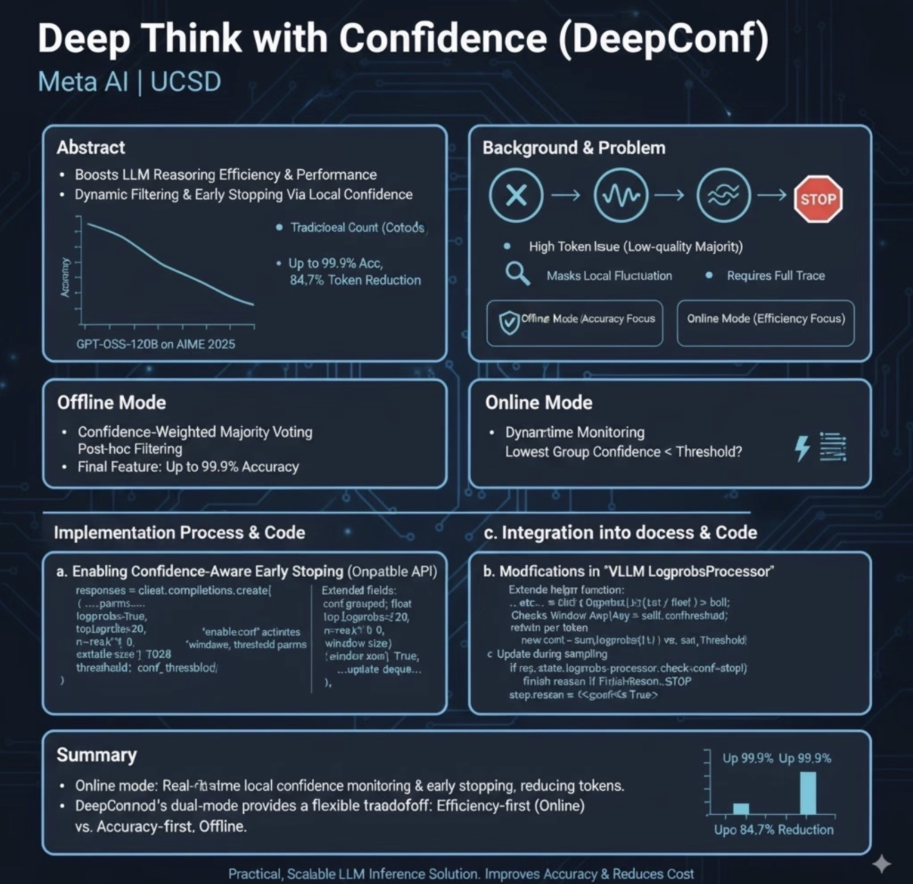
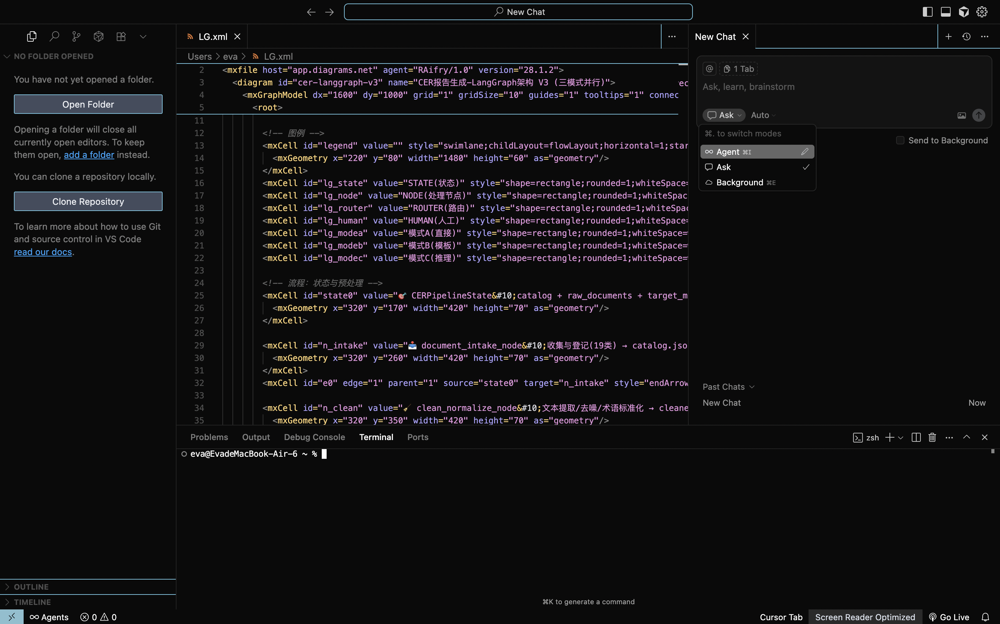

MBA社群AI分享完整方案
从工具使用到产品开发的完整指南
开场
调查问题设计
现场
快速调研（举手投票）
使用频率
每天用AI的举手 → 每周用的 → 偶尔用的 → 没用过的
使用深度
只用ChatGPT聊天的 → 会写复杂Prompt的 → 用过API/插件的 → 自己开发过AI应用的
使用场景
工作提效 → 学习研究 → 创意娱乐 → 商业决策
认知边界
觉得AI很神秘的 → 了解基本原理的 → 关注商业机会的
"根据调研结果，我今天会重点讲解适合大家层次的内容，让每个人都能带走3个立刻可用的AI技巧。"
第一部分
AI深度使用者的进阶秘籍
1.1
AI 核心概念小词典
Token
专业解释：Token是大语言模型处理文本的最小单元，可以是一个字、一个词、或一个子词片段。模型在训练和推理时，会把输入文本拆分为一连串的tokens，再逐个预测下一个token。它同时也是计费和计算的基本单位。
通俗解释：AI理解人类语言的最小单元，像是字母和笔画
Temperature
专业解释：生成模型在采样下一个token的概率分布时，Temperature控制分布的平滑程度。数值低时（接近0）模型更倾向选择概率最高的词；数值高时（接近1甚至>1）则会增加随机性。
通俗解释：也就是AI的"创意度"，0=严谨，1=天马行空
Top-K
专业解释：在生成时，只考虑概率最高的前K个候选词，其余词的概率直接丢弃，再在这K个中按概率重新采样。
通俗解释：想象你在点餐：菜单上100道菜，AI只看前K道热门菜，然后随机点一道。K越小→越保守；K越大→越有探索性。
幻觉（Hallucination）
专业解释：在大语言模型生成过程中，由于缺乏足够的训练样本或推理链路错误，模型可能输出与事实不符、逻辑错误或凭空捏造的信息。
通俗解释：AI有时候会"一本正经地胡说八道"。捏造一条不存在的法规、论文和"事实"。是需要人为干预的重灾区。
Prompt
专业解释：指令提示，输入给大语言模型的自然语言或结构化文本，用来引导模型输出特定风格、格式或内容的结果。
通俗解释：就是你和AI聊天的"话术"。说清楚了，AI才能干活。比如："帮我写个情书，200字，押韵。"
Vibe Coding
专业解释：一种轻量化、实验性强的编程方式，强调快速原型、氛围感和与AI协作的创造性开发过程。
通俗解释：氛围感编程。用prompt调用AI输出编程的效果，但是不一定要人实际做coding的内容。
Content Engineering
专业解释：在AI提示设计中，除了Prompt，还要补充背景资料、任务需求、输入输出示例等上下文，帮助模型更准确理解目标。
通俗解释：就是"喂料"，先给AI背景知识（比如需求文档、产品介绍）
RAG
专业解释：一种"检索增强生成"方法。先从外部知识库检索相关文档，再把这些文档作为上下文输入模型，以减少幻觉、增加可追溯性。
通俗解释：就像给AI装上一个"随身百科全书"。它不会只靠记忆瞎编，而是先查资料再回答。
Fine-Tuning
专业解释：在预训练模型的基础上，用精心准备的小规模领域数据进行二次训练，使模型参数更贴近特定任务或行业需求。
通俗解释：大模型像个通才学生，啥都懂点；微调就像开小灶补课，让它在一个领域变成专家。
MCP
专业解释：MCP是OpenAI提出的模型上下文协议，用于标准化AI模型和外部工具/数据源的交互方式。
通俗解释：就像给AI插USB外设：想查资料→插个"数据库U盘"；想调GitHub→插个"代码库U盘"
Takeaway：学会这10个词，你就能和技术团队/投资人专业对话
1.2
工具矩阵，覆盖工作全场景
ChatGPT
Memory Setting（感知对话偏好和项目进度）

ChatGPT
自定义Prompt+API，建立GPTs私人管家

ChatGPT
1. 了解你的学习计划偏好；2.对接个人知识库直接操作

ChatGPT
Altas--AI浏览器：同步浏览用户页面，代理操作

Kimi
扒链接专用

Gemini
Google生态集成

Claude Code
专业级报告撰写+Coding Manager
DeepSeek & Qwen
开源替代方案
内容创作
NanoBanana、RoboNeo、Snipd

设计工作
Lovable V0 Bolt Figma（低代码界面设计）
1.3
AI 可以是最懂你的Mentor
实用场景：
因为大量的交互，AI记住你的工作背景、偏好、专业领域、目标、能力乃至性格包袱。
- 效率工具+知识学习工具
- 每周工作复盘，AI提供改进建议
- 个人学习计划，AI推荐资源和路径
- 决策支持，基于你的价值观和目标
- 情感复盘，正视自己的负面情绪，并行动消解
1.4
信息源升级，构建AI雷达
AI研究机构 & 科学家
Andrew Ng
AI Education, Stanford, Coursera创始人
Yann LeCun
Meta AI首席科学家, CNN之父
Geoffrey Hinton
深度学习教父, 图灵奖得主
Andrej Karpathy
前OpenAI/Tesla AI总监
OpenAI Research
GPT系列论文发布
DeepMind
AlphaGo, Gemini研发团队
AI创业者 / 产品实验
Sam Altman
OpenAI CEO
Dario Amodei
Anthropic CEO (Claude)
Emad Mostaque
Stability AI CEO (Stable Diffusion)
Harrison Chase
LangChain创始人
Aidan Gomez
Cohere创始人, Transformer论文作者
Lex Fridman
AI研究者, 播客主持人
投资人 / VC / 孵化
Reid Hoffman
Greylock Partners, LinkedIn创始人
Marc Andreessen
a16z联合创始人
李开复
创新工场董事长兼CEO
沈南鹏
红杉资本中国创始合伙人
Y Combinator
顶级孵化器, OpenAI早期投资
Benchmark
专注早期AI投资
产品人 / 创业者
Julie Zhuo
前Facebook设计VP, Sundae联合创始人
Lenny Rachitsky
产品增长专家, Newsletter作者
Nathan Baschez
Every联合创始人, AI产品分析师
Connie Chan
a16z合伙人, 专注消费科技
Benedict Evans
科技趋势分析师
梁宁
湖畔大学产品模块学术主任
媒体 / 播客
The Information
科技行业深度报道
Stratechery
Ben Thompson科技战略分析
AI Breakdown
每日AI新闻播客
Acquired
科技公司深度解析播客
机器之心
AI领域专业媒体
量子位
AI科技新闻报道
社区 / 创业氛围
Hacker News
技术创业者聚集地
Product Hunt
新产品发布平台
AI Twitter
AI从业者活跃社区
GitHub
开源AI项目集散地
Discord AI Communities
实时AI讨论群组
Reddit r/MachineLearning
ML研究讨论社区
第二部分
从工具使用到产品开发
2.1
为什么要自己开发AI应用？
商业逻辑
- 通用工具 → 行业定制 → 商业机会
- 成本优势：API调用比雇人便宜90%
- 速度优势：想法到原型，从6个月→48小时
类比：就像从用Excel→写宏→开发专业软件
个人角度
- AI+灵感+品味+痛点=最完美的个人表达
- 成为创造者，把AI设计变成生活艺术
- 成为社交名片，更好地链接同频社群
2.2
IDE选择：Cursor深度解析
谁适合用
有编程需求但不想深入学代码的人
能干什么
自动化脚本、静态页面、集成网站、插件工具、小程序、App等
怎么用
自然语言描述需求 → AI生成代码 → 迭代优化
进阶使用
Rules设定+MCP工具箱+周期开发意识+上下文工程

2.3
展会观察

2.5
开放讨论
- 你的行业有哪些AI化机会？
- 对我的项目有什么建议？
- 有投资或合作意向吗？
第三部分
学习路径
3.1
理论学习路径
理论打底
- 首先了解深度学习-deep learning（前馈神经网络、梯度传播）
- 其次理解语言传播的演进（LLM-RNN-LSTM-Transformer自注意力、多头注意力的机制、位置编码、残差连接、前馈网络）
- 最后是模型训练（Layer Norm、KV-Cache）
- 分词（BPE、WordPiece、SentencePiece）
模型认知
- BERT、GPT、LAMA模型本身的结构差异和设计理念
- （目前行业都在用的decoder-only，就具备着推理能力高、部署简单、延迟低）
训练和对齐
- 学习如何采集数据、清洗数据、构造好的结构化数据
- 训练阶段了解学习率调度、优化器选择、混合精度训练、梯度累积
- 微调阶段：Prompt Engineering-->Prompt tuning-->SFT-->DPO-->LoRA\QLoRA
- 对齐阶段：RLHF、DPO
工程化
（能部署并跑通，并且得到比较好的效率）
- 掌握模型压缩（蒸馏、量化、剪枝）
- 学会分布式训练（数据并行、模型并行、流水线并行、ZeRo技术优化方式）
- 推理部署：KV缓存优化、动态batch调整、服务化封装、容灾体系
前沿应用
- 构建RAG系统、打造Agent系统、拓展多模态能力（如Clip、Blip处理图文的能力）
- 评估优化：内容理解、幻觉识别、有害内容的过滤、隐私保护
- 合规方面（模型的版本管理机制、接入用户反馈等）
推荐：YouTube、论文、博客综合学习
3.2
AI 系统能力演进 V1--V5
说明：这里的V1--V5并非具体产品路线，而是一个通用的AI系统演进框架。它展示了从「简单可行性验证」到「复杂多智能体协作」再到「自学习」的逐步升级路径。
V1 --- 框架生成 & 单点验证
目标：验证可行性，证明AI能够生成文档/任务框架，并在单个模块内完成一致性或正确性检查。
技术路径：
- API调用（GPT、Gemini等大模型）
- Prompt链 & 规则匹配
- OCR支持（文本提取）
- 多Prompt分链路管理
参考资源：
RapidOCR --- 高效OCR工具
Bedrock Prompt Chaining示例 --- 多链路管理范例
RapidOCR --- 高效OCR工具
Bedrock Prompt Chaining示例 --- 多链路管理范例
V2 --- 全流程扩展 & 轻量 RAG
目标：扩展到更复杂的任务范围，引入检索增强生成（RAG），提升检索与生成的准确性。
技术路径：
- 文本清洗与标准化、切块向量化
- 稀疏检索（BM25）+ 向量检索（FAISS/Chroma/Pinecone）混合
- ReRank（Cross-Encoder / Cohere / BGE）
- 自动评估（RAGTruth等）
参考资源：
RAGFlow --- 开源RAG引擎
RAGTruth --- 事实标注数据集
ARES --- 自动评估框架
RAGFlow --- 开源RAG引擎
RAGTruth --- 事实标注数据集
ARES --- 自动评估框架
V3 --- Planner + 小模型优化
目标：实现任务拆解、模块化执行；在特定子任务中使用轻量小模型进行优化。
技术路径：
- Planner / 任务图（LangGraph等）
- 子任务级LoRA / PEFT微调
- 示例驱动优化、数据对优化
参考资源：
LangGraph --- 有状态Agent编排框架
Open Deep Research --- 多Agent深度研究框架
DeepAgents --- 自主Agent框架
MetaGPT --- 多角色协作框架
LangGraph --- 有状态Agent编排框架
Open Deep Research --- 多Agent深度研究框架
DeepAgents --- 自主Agent框架
MetaGPT --- 多角色协作框架
V4 --- 多 Agent Pipeline
目标：形成可用的多智能体流水线，支持跨模块协作、自动报告生成等复杂工作流。
技术路径：
- 多Agent协作：Retriever / Extractor / Checker / Composer
- 审核Agent（Auditor）+ 人机反馈闭环
- 子Agent与消息流转机制
参考资源：
deepagents --- 子代理与虚拟文件系统
MetaGPT --- 虚拟团队多Agent协作
open_deep_research --- 自学习雏形
deepagents --- 子代理与虚拟文件系统
MetaGPT --- 虚拟团队多Agent协作
open_deep_research --- 自学习雏形
V5 --- RLHF + 自学习
目标：模拟专家角色，具备自学习与迭代优化能力。
技术路径：
- RLHF（强化学习 + 人类反馈）
- Learner + Auditor闭环优化
- 知识图谱与奖励模型结合
参考资源：
awesome-RLHF --- RLHF学习资源
awesome-foundation-agents --- 多Agent系统资料
LLM Agent Papers --- Agent必读论文合集
awesome-RLHF --- RLHF学习资源
awesome-foundation-agents --- 多Agent系统资料
LLM Agent Papers --- Agent必读论文合集
学习建议：V1--V2阶段适合入门者，重点掌握Prompt设计、OCR、RAG基础；V3--V4阶段面向进阶者，重点研究任务规划、多Agent框架；V5阶段属于前沿探索，需要结合RLHF、奖励建模和知识图谱。
总结
行动计划
立即可用的Tips
- 黑话库：掌握10个AI核心概念，与技术团队专业对话
- 信息源：构建个人AI雷达系统，及时捕获行业动态
- 学习路径：从V1到V5循序渐进，理论与实践并重
下一步行动
- 增加使用频率和广度
- 全平台增加信息源
- 结合业务痛点思考AI可能性
联系方式
医械 RA 圈 · 最懂 AI · 爱游泳的辩论选手 🏊♀️
微信：17621536169
GitHub：Jianan-Huang0609